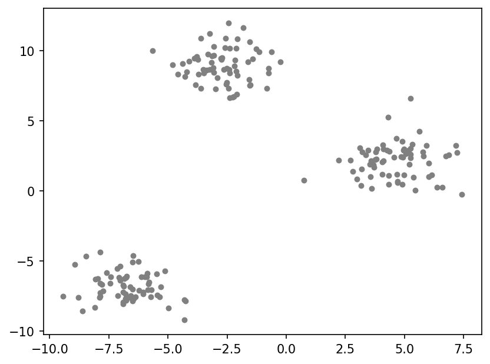
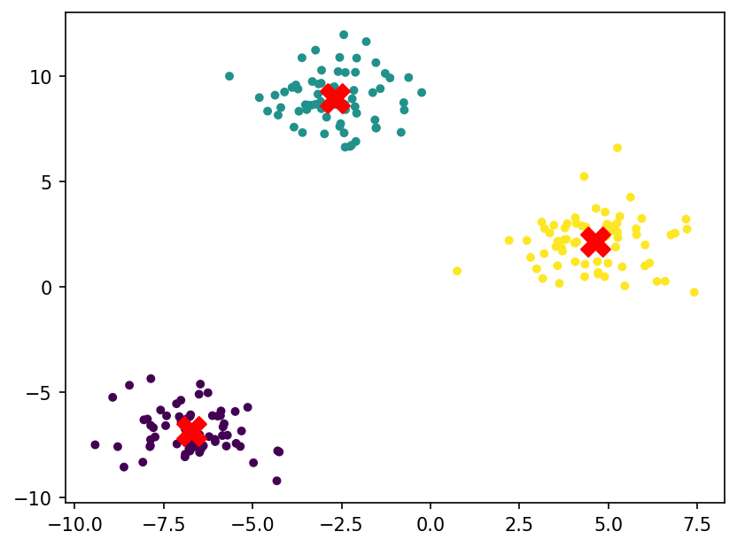
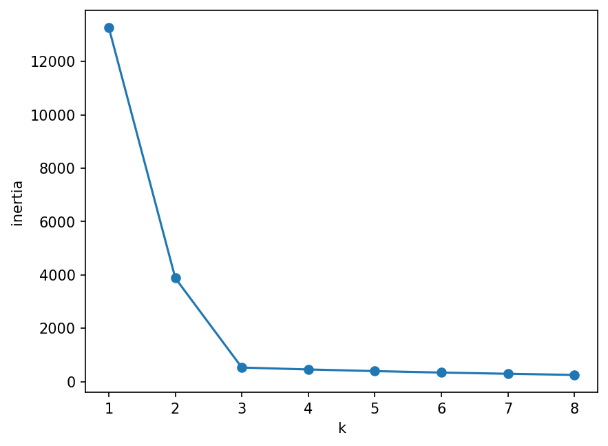

Finding groups without labels: k-means clustering
Introduction to Data Science and Machine Learning · Md Mahbub E Noor · University of Barishal
KMeans(n_clusters=3, n_init=10) km.fit_predict(X)
200 invented points. No colours, no answers. Do you see groups?
import matplotlib.pyplot as plt
from sklearn.datasets import make_blobs
X, _ = make_blobs(n_samples=200, centers=3,
cluster_std=1.2, random_state=42)
plt.scatter(X[:, 0], X[:, 1], s=14, color="gray")
plt.show()
How many groups to find. We decide this; it is a hyperparameter.
Each point joins the nearest centre. Centres start at random places.
Each centre moves to the mean of its points. Repeat steps 2 and 3 until nothing changes.
Points 1, 2, 3, 10, 11, 12. k = 2. Start the centres at 1 and 2 (a poor start, on purpose).
# Round 1: all but 1 are # nearer to centre 2. # New centres: 1 and 7.6 # Round 2: 2 and 3 switch. # New centres: 2 and 11 # Round 3: no change: stop.
| round | centres | group 1 | group 2 | new centres |
|---|---|---|---|---|
| 1 | 1, 2 | [1] | [2, 3, 10, 11, 12] | 1, 7.6 |
| 2 | 1, 7.6 | [1, 2, 3] | [10, 11, 12] | 2, 11 |
| 3 | 2, 11 | [1, 2, 3] | [10, 11, 12] | 2, 11 |
Next row: arrow key or the ▶ button. Predict it first!
WATCH FOR
Silent video: press play, pause any time.
n_clusters is kn_init=10: run 10 random starts, keep the bestfit_predict returns a cluster number per pointimport numpy as np from sklearn.cluster import KMeans km = KMeans(n_clusters=3, n_init=10, random_state=0) labels = km.fit_predict(X) print(km.cluster_centers_.round(2)) print(np.bincount(labels))
[[-6.72 -6.85] [-2.69 8.95] [ 4.63 2.13]] [66 67 67]
Colours are the clusters k-means found; crosses are the centres.
plt.scatter(X[:, 0], X[:, 1], c=labels,
s=14, cmap="viridis")
c = km.cluster_centers_
plt.scatter(c[:, 0], c[:, 1], marker="X",
s=250, color="red")
plt.show()
Inertia = total squared distance of points to their centre. It always falls as k grows; look for the bend.
ks = range(1, 9)
inertia = []
for k in ks:
km_k = KMeans(n_clusters=k, n_init=10, random_state=0)
inertia.append(km_k.fit(X).inertia_)
plt.plot(list(ks), inertia, marker="o")
plt.xlabel("k")
plt.ylabel("inertia")
plt.show()
import pandas as pd
from sklearn.datasets import load_iris
iris = load_iris()
cl = KMeans(n_clusters=3, n_init=10,
random_state=0).fit_predict(iris.data)
species = [iris.target_names[t] for t in iris.target]
print(pd.crosstab(pd.Series(species, name="species"),
pd.Series(cl, name="cluster")))cluster 0 1 2 species setosa 0 50 0 versicolor 48 0 2 virginica 14 0 36
The elbow helps, but domain knowledge often decides.
It uses distances, so features on large scales dominate, exactly as in k-NN.
Long, curved or very uneven groups are split badly. Other methods exist.
from sklearn.preprocessing import StandardScaler
st = pd.read_csv("students.csv").dropna()
cols = ["hours", "prior_gpa"]
Z = StandardScaler().fit_transform(st[cols])
km = KMeans(n_clusters=3, n_init=10)
st["cluster"] = km.fit_predict(Z)
print(st.groupby("cluster")[cols].mean())Read the last line of an error first. It names the problem.
| What you typed | What Python says | What it means |
|---|---|---|
KMeans(n_clusters=3).fit(pd.read_csv("students.csv").dropna()) | ValueError: could not convert string to float: 'Math' | Text column (dept) in the data: select numeric columns only. |
KMeans(n_clusters=10).fit([[1], [2], [3]]) | ValueError: n_samples=3 should be >= n_clusters=10. | Cannot make 10 clusters from 3 points. |
km.predict([[1.0]]) | ValueError: X has 1 features, but KMeans is expecting 2 features as input. | km was fitted on 2 features; give it 2 values. |
In the lab you can
Opens in a new tab and works offline. All labs: labs/START_HERE.html
unsupervised | No labels: find structure |
KMeans(n_clusters=k, n_init=10) | k-means model |
km.fit_predict(X) | Cluster number per row |
km.cluster_centers_ | Where the centres ended |
km.inertia_ | Total squared distance |
elbow method | Choose k at the bend |
pd.crosstab(a, b) | Compare two labelings |
Due before Lecture P3 · [date]
Run k-means with k = 2 on 1, 2, 6, 7, 8, 20, starting with centres 1 and 20. Show each round until it stops.
Make blobs with centers=4 and draw the elbow plot. Does the bend appear at 4?
Cluster students.csv on hours and attendance with and without scaling. Compare the group means.
Try k = 2 and k = 4 on iris and print the crosstab. What happens to setosa?
Describe one real situation where clustering would help, and what you would do with the clusters.
Watch it again at home to revise.